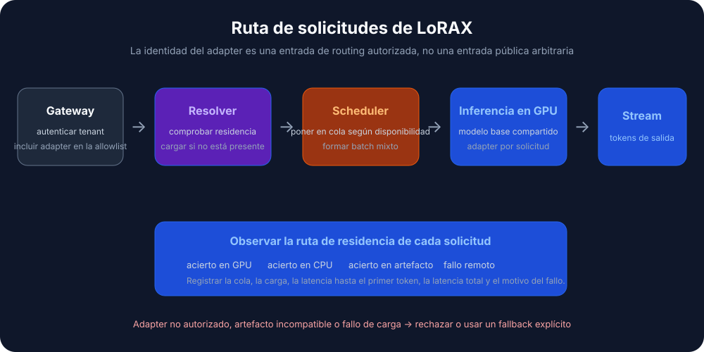
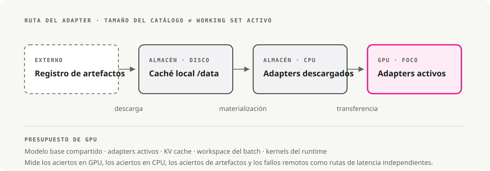

Traducción automática
Este artículo se tradujo automáticamente a partir de la versión original en inglés.
Guía de serving con LoRAX: miles de adaptadores LoRA en Kubernetes
Servir decenas de modelos de lenguaje grandes ajustados solía significar una GPU por modelo. LoRAX (LoRA eXchange) mantiene un único modelo base en memoria e intercambia en caliente adaptadores LoRA ligeros por solicitud. El coste por token se mantiene prácticamente plano a medida que añades fine-tunes.
Esta guía explica qué es LoRA, cuándo elegir LoRAX frente a vLLM, cómo desplegarlo en Kubernetes con el chart oficial de Helm y cómo llamar a las APIs REST, Python y compatibles con OpenAI.
Contexto: ¿qué es LoRA?
Low-Rank Adaptation (LoRA) congela los pesos del modelo preentrenado e inyecta pequeñas matrices de descomposición de rango en cada capa Transformer. En lugar de reentrenar el modelo completo, entrenas un pequeño conjunto de "diffs" que capturan el nuevo comportamiento.
Un fine-tune completo de un modelo 7B es un archivo de más de 20 GB. Un adaptador LoRA para ese mismo modelo ronda los 100 MB. Esa diferencia es lo que hace posible el serving dinámico: puedes mantener miles de adaptadores en disco y cargar uno en memoria GPU en milisegundos.
El problema que resuelve LoRAX
El serving multimodelo de la forma tradicional es caro. Cada modelo ajustado necesita su propia memoria GPU, así que servir 50 modelos específicos por cliente requiere 50 despliegues, o al menos 50× la memoria. El coste escala linealmente con cada nueva variante.
LoRAX es un proyecto Apache 2.0 de Predibase. Amplía el servidor Text Generation Inference de Hugging Face con carga dinámica de adaptadores, caché de pesos por niveles y batching multiadaptador. En conjunto, eso te permite servir cientos de adaptadores LoRA específicos por tenant en una sola GPU de clase Ampere sin perder throughput ni latencia.
La clave: el fine-tuning con LoRA produce pequeños pesos delta en lugar de copias completas del modelo. LoRAX mantiene solo el modelo base residente en la GPU e inyecta los pesos del adaptador bajo demanda. Los adaptadores que no se están usando no consumen nada de VRAM.
Cómo funciona
Carga dinámica de adaptadores
Los pesos del adaptador se inyectan justo a tiempo para cada solicitud. El modelo base permanece residente en memoria GPU mientras los adaptadores se cargan al vuelo sin bloquear otras solicitudes. Puedes catalogar miles de adaptadores, pero solo pagar el coste de memoria de los que están sirviendo tráfico activamente.
Caché de pesos por niveles
LoRAX distribuye los adaptadores en tres capas: VRAM de la GPU para los adaptadores calientes, RAM de CPU para los templados y disco para el almacenamiento frío. Esta jerarquía evita errores de falta de memoria y mantiene los tiempos de intercambio lo bastante bajos como para que los usuarios no lo noten.
Batching continuo multiadaptador
Aquí es donde LoRAX cambia el comportamiento del batching. Amplía el batching continuo para que funcione en paralelo entre distintos adaptadores, de modo que las solicitudes dirigidas a diferentes fine-tunes puedan compartir el mismo forward pass. Los benchmarks de Predibase muestran que procesar 1 M de tokens repartidos entre 32 adaptadores distintos lleva aproximadamente el mismo tiempo que 1 M de tokens en un único modelo.
TGI por debajo
LoRAX se basa en Text Generation Inference (TGI) de Hugging Face, así que heredas las optimizaciones de TGI: FlashAttention 2, paged attention, kernels SGMV para inferencia multiadaptador y respuestas en streaming. Es TGI más cambio dinámico de adaptadores.
El coste por token se mantiene prácticamente plano
La gráfica deja clara la idea. Los despliegues dedicados (gris oscuro) escalan linealmente: duplicas los modelos, duplicas el coste. LoRAX (naranja) mantiene el coste por token casi plano a medida que añades adaptadores. Incluso los fine-tunes por API alojada de proveedores como OpenAI (gris claro) no pueden igualarlo para cargas multimodelo.

Coste por millón de tokens a medida que sirves más modelos ajustados. LoRAX se mantiene casi plano gracias al batching multiadaptador; los despliegues dedicados escalan linealmente. Fuente: LoRAX GitHub.
Flujo de solicitud

Cuándo usar LoRAX
LoRAX tiene sentido en algunas situaciones concretas.
- SaaS multitenant. Estás construyendo una plataforma donde cada uno de 500 clientes tiene un chatbot ajustado con sus datos. El enfoque tradicional pide 500 despliegues de modelo. LoRAX sirve los 500 desde una sola GPU cargando el adaptador correspondiente cuando llega la solicitud de un cliente.
- Enrutado de expertos por dominio. Mantienes LLM especializados en derecho, medicina, finanzas e ingeniería. En lugar de cuatro despliegues separados de 13B, LoRAX ejecuta un único LLaMA 2 13B base y enruta al adaptador adecuado según el dominio de la solicitud.
- Experimentación rápida. ¿Probando 10 enfoques de fine-tuning en producción? Despliega LoRAX una vez y cambia entre variantes modificando el parámetro
adapter_id. Sin cambios de infraestructura ni reinicios del servicio. - Despliegues con recursos limitados o en edge. Una sola NVIDIA A10G puede alojar un modelo base 7B cuantizado más decenas de adaptadores específicos por tarea, en lugar de una GPU por modelo.
Arquitectura: jerarquía de memoria y planificación de solicitudes
LoRAX está construido en torno a una jerarquía de memoria de tres niveles. Entenderla te ayuda a predecir el rendimiento y planificar capacidad.

LoRAX trata cada adaptador como una "vista" ligera sobre el modelo base compartido. El scheduler agrupa solicitudes de forma que servir 32 adaptadores distintos pueda ser tan rápido como servir uno, incluso con un throughput de un millón de tokens. Los adaptadores suelen pesar entre 10 y 200 MB cada uno, frente a modelos completos de varios gigabytes.
Desplegar LoRAX en Kubernetes
LoRAX incluye charts de Helm e imágenes Docker, así que el despliegue en Kubernetes es sencillo.
Requisitos previos
Necesitarás:
- Un clúster de Kubernetes con GPUs NVIDIA (generación Ampere o posterior: A10, A100, H100)
- NVIDIA Container Runtime configurado en los nodos con GPU
kubectlyhelminstalados localmente- Almacenamiento persistente para las cachés de adaptadores; monta un PersistentVolume en
/datadentro del pod
Inicio rápido con el chart oficial de Helm
Helm es el gestor de paquetes de Kubernetes. Agrupa todos los recursos de Kubernetes que necesita una aplicación (Deployments, Services, ConfigMaps, etc.) en un único "chart", de modo que puedas desplegar todo con un solo comando en lugar de gestionar a mano decenas de archivos YAML.
Predibase retiró su repositorio público de Helm a finales de 2024, así que el flujo soportado es clonar el repositorio de LoRAX e instalar el chart desde disco. Ejecuta estos comandos desde tu estación de trabajo:
# Clone the LoRAX repository and switch into it
git clone https://github.com/predibase/lorax.git
cd lorax
# Make sure kubectl can talk to your cluster
kubectl config current-context
kubectl get nodes
# Build chart dependencies (generates charts/lorax/charts/*.tgz)
helm dependency update charts/lorax
# Optional: render manifests locally to verify everything is templating
helm template mistral-7b-release charts/lorax > /tmp/lorax-rendered.yaml
# Deploy with default settings (Mistral-7B-Instruct)
helm upgrade --install mistral-7b-release charts/lorax
# Watch the pod come up
kubectl get pods -w
# Check logs to see model loading progress
kubectl logs -f deploy/mistral-7b-release-lorax
El chart crea un Deployment (una réplica por defecto) y un Service de tipo ClusterIP escuchando en el puerto 80. El primer arranque descarga el modelo base desde Hugging Face y lo carga en memoria GPU, lo que puede tardar unos minutos según tu red y tu GPU. Los reinicios posteriores reutilizan los pesos en caché del volumen persistente.
Consejo: Si
helm upgrade --installdevuelveKubernetes cluster unreachable, el contexto de tu kubeconfig apunta a un clúster que está offline. Arranca tu clúster local (Docker Desktop, kind, minikube) o cambia a un contexto accesible conkubectl config use-context. Ejecutarkubectl get nodesantes de desplegar confirma que el servidor API está activo.
Personalizar el modelo base y el escalado
Puedes cambiar el modelo base o ajustar recursos creando un archivo de valores personalizado. Aquí tienes un ejemplo de llama2-values.yaml:
# Use LLaMA 2 7B Chat instead of Mistral
modelId: meta-llama/Llama-2-7b-chat-hf
# Enable 4-bit quantization to save VRAM
modelArgs:
quantization: "bitsandbytes"
# Scale to 2 replicas for high availability
replicaCount: 2
# Request exactly 1 GPU per pod
resources:
limits:
nvidia.com/gpu: 1
Despliega con tu configuración personalizada:
helm upgrade --install -f llama2-values.yaml llama2-chat-release charts/lorax
Ejecuta esos comandos desde el repositorio clonado lorax/ para que Helm pueda localizar el directorio del chart.
LoRAX soporta de serie los modelos open source más populares: LLaMA 2, CodeLlama, Mistral, Mixtral, Qwen y otros. Consulta la lista de compatibilidad de modelos para ver las últimas incorporaciones.
Exponer el servicio
El tipo de Service por defecto es ClusterIP, que solo permite acceso desde dentro del clúster. Para tráfico externo, puedes:
- Crear un Service de tipo LoadBalancer (en proveedores cloud)
- Configurar un Ingress con terminación TLS
- Colocar un API gateway delante para autenticación y rate limiting
Limpieza
Cuando termines de probar, libera los recursos de GPU:
helm uninstall mistral-7b-release
Esto elimina el Deployment, el Service y todos los pods. Los pesos del modelo en caché permanecen en el PersistentVolume salvo que lo elimines por separado.
Trabajar con las APIs de LoRAX
Una vez desplegado, LoRAX expone tres formas de interactuar con él: una API REST compatible con Hugging Face TGI, una librería cliente de Python y un endpoint compatible con OpenAI. Las tres soportan cambio dinámico de adaptadores.
API REST
El endpoint /generate acepta payloads JSON con tu prompt y parámetros opcionales. Uso del modelo base sin ningún adaptador:
# Basic request to the base model (no adapter)
curl -X POST http://localhost:8080/generate \
-H "Content-Type: application/json" \
-d '{
"inputs": "Write a short poem about the sea.",
"parameters": {
"max_new_tokens": 64,
"temperature": 0.7
}
}'
La respuesta incluye el texto generado y metadatos como recuento de tokens y tiempos.
Cargar un adaptador específico
Añade un parámetro adapter_id para apuntar a un modelo ajustado. Aquí tienes un ejemplo usando un adaptador especializado en matemáticas:
curl -X POST http://localhost:8080/generate \
-H "Content-Type: application/json" \
-d '{
"inputs": "Natalia sold 48 clips in April, and then half as many in May. How many clips did she sell in total?",
"parameters": {
"max_new_tokens": 64,
"adapter_id": "vineetsharma/qlora-adapter-Mistral-7B-Instruct-v0.1-gsm8k"
}
}'
En la primera llamada con un nuevo adapter_id, LoRAX descarga el adaptador desde Hugging Face Hub y lo almacena en caché en /data. Las solicitudes posteriores usan la versión en caché. También puedes cargar adaptadores desde rutas locales configurando "adapter_source": "local" junto con una ruta de archivo.
Cliente de Python
Para acceso programático, instala el paquete lorax-client:
pip install lorax-client
El cliente encapsula la API REST con una interfaz limpia:
from lorax import Client
# Connect to your LoRAX instance (default port 8080)
client = Client("http://localhost:8080")
prompt = "Explain the significance of the moon landing in 1969."
# 1. Generate using the base model (no adapter loaded)
base_response = client.generate(prompt, max_new_tokens=80)
print("Base model:", base_response.generated_text)
# 2. Generate using a fine-tuned adapter
# The adapter_id can be a Hugging Face repo ID or a local path
adapter_response = client.generate(
prompt,
max_new_tokens=80,
adapter_id="alignment-handbook/zephyr-7b-dpo-lora",
)
print("With adapter:", adapter_response.generated_text)
El cliente soporta streaming, parámetros de decodificación (temperature, top-p, repetition penalty) y detalles a nivel de token. Consulta la referencia del cliente para casos de uso avanzados.
Endpoint compatible con OpenAI
LoRAX implementa la API OpenAI Chat Completions bajo la ruta /v1. Eso te permite integrar LoRAX en herramientas que esperan el formato de API de OpenAI: LangChain, Semantic Kernel o aplicaciones personalizadas.
Usa el campo model para especificar qué adaptador cargar:
import openai
# Point the OpenAI client at LoRAX
openai.api_key = "EMPTY" # LoRAX doesn't require an API key by default
openai.api_base = "http://localhost:8080/v1"
# The model parameter becomes the adapter_id
# This allows seamless integration with tools like LangChain
response = openai.ChatCompletion.create(
model="alignment-handbook/zephyr-7b-dpo-lora",
messages=[
{"role": "system", "content": "You are a friendly chatbot who speaks like a pirate."},
{"role": "user", "content": "How many parrots can a person own?"},
],
max_tokens=100,
)
print(response["choices"][0]["message"]["content"])
De esto se derivan dos casos de uso prácticos:
- Sustitución directa. Migra aplicaciones existentes desde los modelos alojados de OpenAI a tu propia infraestructura cambiando una sola línea de configuración.
- Integración con herramientas. Usa LoRAX con cualquier framework que ya soporte la API de OpenAI, sin código personalizado para adaptadores.
La primera solicitud a un adaptador nuevo tiene más latencia mientras LoRAX lo descarga y lo carga. Tenlo en cuenta en aplicaciones orientadas al usuario, precargando los adaptadores populares o mostrando un estado de carga.
Trade-offs
Qué hace bien LoRAX
- Muchos modelos en una sola GPU. Cientos o miles de modelos ajustados en una sola GPU en lugar de un despliegue por modelo. El coste se mantiene casi constante a medida que añades adaptadores.
- Sin memoria ociosa. Los adaptadores se cargan bajo demanda. Los modelos no usados no consumen VRAM. Puedes mantener un catálogo de más de 1.000 modelos especializados y solo pagar por los pocos que sirven tráfico activamente.
- El throughput se mantiene. El batching continuo multiadaptador mantiene la latencia y el throughput cerca del serving de un solo modelo. Los benchmarks de Predibase muestran que servir 32 adaptadores en paralelo añade poco overhead frente a servir uno solo.
- TGI por debajo. Construido sobre Hugging Face TGI, así que heredas FlashAttention 2, paged attention, streaming y kernels SGMV para inferencia multiadaptador.
- Operativamente completo. Imágenes Docker, charts de Helm, métricas de Prometheus, trazas con OpenTelemetry. Apache 2.0, así que no hay restricciones comerciales.
- Amplio soporte de modelos. Funciona con LLaMA 2, CodeLlama, Mistral, Mixtral, Qwen y otros. Soporta cuantización (4-bit vía bitsandbytes, GPTQ, AWQ) para reducir la huella de memoria.
Limitaciones
- Solo LoRA. Todos los adaptadores deben proceder de fine-tuning estilo LoRA sobre el mismo modelo base. Los fine-tunes completos que generan modelos independientes no funcionarán sin conversión. Arquitecturas base distintas requieren despliegues LoRAX separados.
- Cold start. La primera solicitud tras el arranque carga el modelo base en memoria GPU (30–90 segundos para modelos grandes). La primera solicitud a un adaptador nuevo tiene latencia de descarga desde Hugging Face. Planifícalo con health checks y precarga.
- Cache thrashing bajo carga a ráfagas. Si el tráfico golpea de repente decenas de adaptadores distintos, LoRAX tiene que mover pesos entre GPU, RAM de CPU y disco. Los intercambios de adaptadores desde RAM rondan los 10 ms, pero un conjunto de trabajo muy grande puede causar ralentizaciones temporales. Vigila la memoria GPU y las tasas de acierto de la caché de adaptadores.
- Proyecto que evoluciona rápido. LoRAX se bifurcó de TGI a finales de 2023 y cambia deprisa. Espera actualizaciones frecuentes y cambios rompientes ocasionales a medida que sigue a TGI upstream. Fija versiones en producción.
LoRAX vs. vLLM
vLLM es otro motor de serving de alto throughput, y añadió soporte multi-LoRA más recientemente. Ambos resuelven problemas distintos.
| Feature | LoRAX | vLLM |
|---|---|---|
| Primary focus | Escala masiva: cientos o miles de adaptadores | Alto throughput: máximo de tokens/s para menos adaptadores activos |
| Architecture | Intercambio dinámico; descarga agresiva a CPU/disco | Batching ajustado para la ejecución concurrente de adaptadores activos |
| Best for | SaaS de long tail: miles de tenants, uso esporádico | Capas de alto tráfico: 5–10 adaptadores muy usados |
| Base | Hugging Face TGI | Motor custom PagedAttention |
Elige LoRAX si tienes una larga cola de adaptadores (uno por usuario, la mayoría inactivos la mayor parte del tiempo) donde la caché por niveles compensa. Elige vLLM si tienes un conjunto pequeño de adaptadores muy activos y lo que más importa es el throughput bruto.
Primeros pasos
Una hoja de ruta práctica desde prototipo hasta producción:
1. Empieza pequeño
Despliega LoRAX con el modelo base que ya estés usando y 3–5 adaptadores representativos. Verifica que la carga de adaptadores funciona y mide la latencia base para tu carga.
2. Mide y perfila
- Haz seguimiento de las tasas de acierto de la caché de adaptadores y de la memoria GPU bajo tráfico realista.
- Identifica los adaptadores calientes (el 20 % superior por volumen de solicitudes) y valora precargarlos al arranque.
- Mide la latencia P50, P95 y P99 tanto para cargas de adaptador en caché como en frío.
3. Optimiza para tu carga
- Si unos pocos adaptadores son muy populares, aumenta la asignación de memoria GPU para mantener más de ellos calientes.
- Si el uso tiene una larga cola repartida entre cientos de adaptadores, ajusta la caché por niveles para equilibrar RAM y disco.
- Usa cuantización (4-bit bitsandbytes o GPTQ) si la VRAM es limitada.
4. Escala horizontalmente
Una vez entendido el comportamiento de una sola instancia, añade réplicas para alta disponibilidad. Coloca un balanceador de carga delante que enrute por adapter_id para que las solicitudes del mismo adaptador lleguen a la misma réplica. Eso mejora la localidad de caché.
5. Monitoriza
Configura dashboards para utilización de GPU, métricas de caché de adaptadores y latencia de solicitudes desglosada por adaptador. Vigila el cache thrashing durante picos de tráfico y ajusta el escalado en consecuencia.
Con LoRAX, ejecutar N fine-tunes pasa a ser un problema de routing en una sola GPU en lugar de un problema de aprovisionamiento en N GPUs.